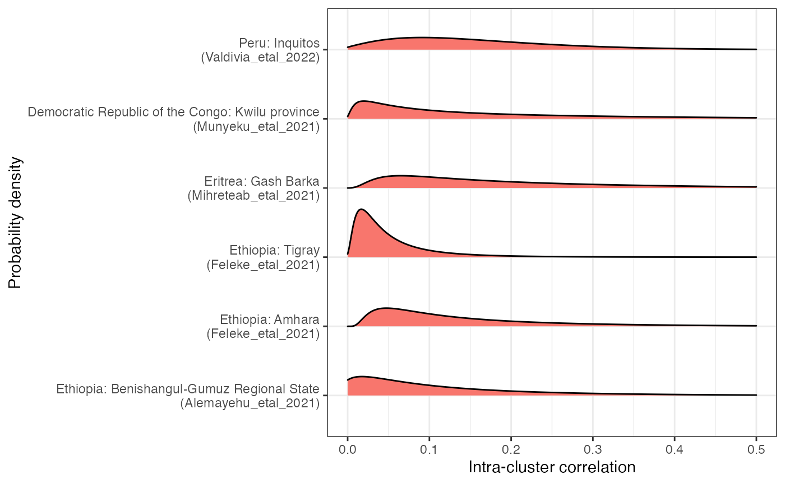
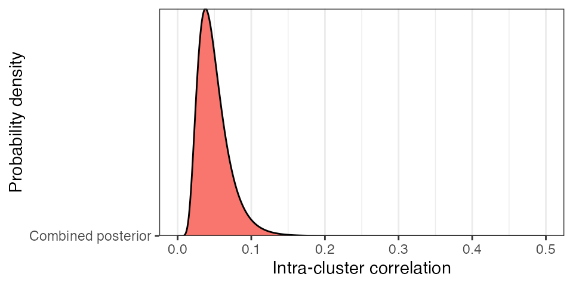
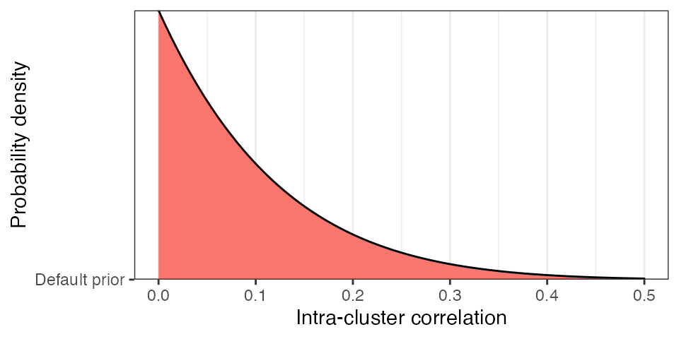

vignettes/historical_analysis.Rmd
historical_analysis.RmdOur objective here is to learn from historical pfhrp2/3 studies and to use this information to increase the power and validity of our approach. In particular, we are interested in coming up with sensible values for the intra-cluster correlation coefficient (ICC). Estimates of the ICC from historical data are vastly better than using simple rules of thumb (e.g. using 1.5 for the design effect) and thankfully the Bayesian framework gives us an excellent way of incorporating this information into our analys.
A large number of pfhrp2/3 studies can be explored through
the WHO malaria
threats map. Although the data are not available for direct download
from this site, they can be manually extracted, or in our case they were
made available by request from the WHO. A data.frame giving all
downloaded studies is available in the DRpower package through the
studies_inclusion object (loaded by default). The raw
data.frame consists of 94 studies. Our first step was to apply the
following filters:
This filtered the original data.frame down to 12 studies. Granular
data from these 12 studies is available within the package through the
historical_data object. At this point, a further filter was
applied:
After applying this second filter, data remained from 5 studies covering 4 countries and 6 ADMIN1 regions:
| Study_name | Country | ADMIN1 | Year | Num_sites | Paper_link |
|---|---|---|---|---|---|
| Alemayehu_etal_2021 | Ethiopia | Benishangul-Gumuz Regional State | 2018 | 4 | https://www.ncbi.nlm.nih.gov/pmc/articles/PMC8095343/#MOESM3 |
| Feleke_etal_2021 | Ethiopia | Amhara | 2017-2018 | 4 | https://www.ncbi.nlm.nih.gov/pmc/articles/PMC8478644/ |
| Feleke_etal_2021 | Ethiopia | Tigray | 2017-2018 | 6 | https://www.ncbi.nlm.nih.gov/pmc/articles/PMC8478644/ |
| Mihreteab_etal_2021 | Eritrea | Gash Barka | 2019 | 5 | https://www.ncbi.nlm.nih.gov/pmc/articles/PMC8548324/#MOESM1 |
| Munyeku_etal_2021 | Democratic Republic of the Congo | Kwilu province | 2018 | 3 | https://www.ncbi.nlm.nih.gov/pmc/articles/PMC8146217/ |
| Valdivia_etal_2022 | Peru | Inquitos | 2011-2018 | 7 | https://pubmed.ncbi.nlm.nih.gov/36400806/ |
The filtered data from these studies are shown below:
| Study_name | Country | ADMIN1 | ADMIN2 | Site | Year | Tested | Deletions |
|---|---|---|---|---|---|---|---|
| Alemayehu_etal_2021 | Ethiopia | Benishangul-Gumuz Regional State | Assosa Zone | Sherkole Health Centre | 2018 | 94 | 14 |
| Alemayehu_etal_2021 | Ethiopia | Benishangul-Gumuz Regional State | Assosa Zone | Bambasi Health Centre | 2018 | 66 | 9 |
| Alemayehu_etal_2021 | Ethiopia | Benishangul-Gumuz Regional State | Assosa Zone | Kurmuk Health Centre | 2018 | 42 | 10 |
| Alemayehu_etal_2021 | Ethiopia | Benishangul-Gumuz Regional State | Assosa Zone | Assosa Health Centre | 2018 | 16 | 6 |
| Feleke_etal_2021 | Ethiopia | Amhara | Metema | 2017-2018 | 233 | 30 | |
| Feleke_etal_2021 | Ethiopia | Amhara | Quara | 2017-2018 | 516 | 39 | |
| Feleke_etal_2021 | Ethiopia | Amhara | Tegede | 2017-2018 | 296 | 65 | |
| Feleke_etal_2021 | Ethiopia | Amhara | West Armachiho | 2017-2018 | 295 | 75 | |
| Feleke_etal_2021 | Ethiopia | Tigray | Ahferom | 2017-2018 | 117 | 18 | |
| Feleke_etal_2021 | Ethiopia | Tigray | Atseged Tsimbila | 2017-2018 | 160 | 48 | |
| Feleke_etal_2021 | Ethiopia | Tigray | Gulomekeda | 2017-2018 | 21 | 5 | |
| Feleke_etal_2021 | Ethiopia | Tigray | K. Humera | 2017-2018 | 176 | 39 | |
| Feleke_etal_2021 | Ethiopia | Tigray | L. Adiabo | 2017-2018 | 145 | 22 | |
| Feleke_etal_2021 | Ethiopia | Tigray | T. Adiabo | 2017-2018 | 69 | 10 | |
| Mihreteab_etal_2021 | Eritrea | Gash Barka | Agordat | 2019 | 100 | 15 | |
| Mihreteab_etal_2021 | Eritrea | Gash Barka | Shambuko | 2019 | 100 | 10 | |
| Mihreteab_etal_2021 | Eritrea | Gash Barka | Tesseney | 2019 | 105 | 1 | |
| Mihreteab_etal_2021 | Eritrea | Gash Barka | Tokombia | 2019 | 106 | 6 | |
| Mihreteab_etal_2021 | Eritrea | Gash Barka | Barentu | 2019 | 101 | 1 | |
| Munyeku_etal_2021 | Democratic Republic of the Congo | Kwilu province | Bandundu | 2018 | 121 | 19 | |
| Munyeku_etal_2021 | Democratic Republic of the Congo | Kwilu province | Kikwit-Nord | 2018 | 276 | 17 | |
| Munyeku_etal_2021 | Democratic Republic of the Congo | Kwilu province | Kikwit-Sud | 2018 | 94 | 9 | |
| Valdivia_etal_2022 | Peru | Inquitos | Amazon Hope | 2011-2018 | 10 | 3 | |
| Valdivia_etal_2022 | Peru | Inquitos | Bellavista Nanay | 2011-2018 | 10 | 9 | |
| Valdivia_etal_2022 | Peru | Inquitos | Apoyo Hospital | 2011-2018 | 119 | 99 | |
| Valdivia_etal_2022 | Peru | Inquitos | Moronacocha | 2011-2018 | 24 | 19 | |
| Valdivia_etal_2022 | Peru | Inquitos | Padrecocha | 2011-2018 | 140 | 109 | |
| Valdivia_etal_2022 | Peru | Inquitos | Puerto America | 2011-2018 | 5 | 2 | |
| Valdivia_etal_2022 | Peru | Inquitos | Santa Clara | 2011-2018 | 13 | 9 |
We can estimate the ICC using the Bayesian model in DRpower by
running the get_ICC() function on each of the 6 studies. We
will assume a completely flat prior on the ICC by setting
prior_ICC_shape1 = 1 and prior_ICC_shape2 = 1,
and we will return the full posterior distribution by setting
post_full_on = TRUE.

We can see that there is limited information on the ICC, as evidenced by the relatively spread out posteriors. That being said, there is evidence that it is greater than 0 and less than around 0.3. We can combine information over sites by multiplying together these posteriors to give the following:

This distribution is much sharper, peaking at ICC = 0.038 and entertaining values up to around 0.1. However, combining posteriors in this way makes the hard assumption that there is a single ICC that is the same everywhere, which may not be true for different populations and geographic regions. For this reason, we take a more practical approach when defining priors; we manually define the prior on ICC to be consistent with historical data while also capturing the plausible range between studies. We opt for a Beta(1, 9) distribution, as shown below:

This distribution allows for ICC values anywhere in the plausible
range from 0 to 0.3, while at the same time putting very low probability
on values greater than this. This prior is adopted as the default in all
DRpower functions, and can be overwritten by setting
prior_ICC_shape1 and prior_ICC_shape2
manually.
When estimating power, we are forced to simulate under an assumed ICC. For the reasons above, we focus on the case of ICC = 0.05 as a realistic value that is likely to hold true for most studies. However, if the aim is to be cautious about the ICC then one can opt for a larger value, which will in turn lead to larger sample sizes.